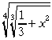
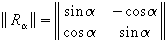
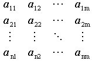
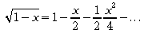
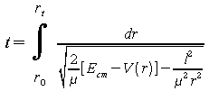
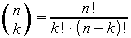
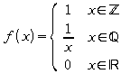
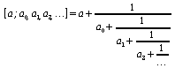
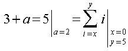

| [zurück] | [Hauptmenü] |
OpenOffice.org Formel
09 - Beispiele
Bei dieser Fülle von Optionen und Feinheiten lernt man am besten anhand von Beispielen. Hier ist eine Sammlung von kleinen bis sehr komplexen Formeln oder einfach nur Ausdrücken zum näheren Studieren.
| Kommando-Eingabefeld | Ergebnis |
|---|---|
nroot{4}{nroot {3} {1 over
3+x^2} } |

|
ldline R_
%alpha rdline =left ldline matrix {sin %alpha # -cos %alpha
## cos %alpha # sin %alpha} right rdline |

|
{partial over
{partial t} x(t)}+a(x)=%lambda cdot F(x,t) |
|
matrix{ |

|
sqrt{1-x} = 1 - x over 2 -
1 over 2 x^2 over 4 - dotslow |

|
t= size +6 int
from {r_0} to {r_t} size -8 {dr over sqrt {2 over %my [E_cm - V(r)]
- l^2 over {%my^2 r^2} } } |

|
left ( stack{n # k} right ) = fact n over {fact k cdot fact (n-k)} |

|
f(x) = left lbrace matrix {1# x in setZ ## 1 over x # x in setQ ##0 # x in setR } right none |

|
[a;a_0,a_1,a_2,dotslow ] = a+{1 over {a_0+1 over {a_1+{1 over {a_2+1 over dotslow}}}}} |

|
3+a=5 left lline " " csub { a=2} right none = sum from { i=x } to y i left lline " " csub { stack { x = 0 # y= 5 }} right none |

|
Bleiben noch Fragen offen, könnte Ihnen die Sammlung häufig gestellter Fragen zu dem Formel-Programm weiterhelfen!
| [zurück] | [Hauptmenü] |
© Copyright 2003, Harald Schilly
This documentation is part of "Erste Schritte: OpenOffice.org Textdokument", which is released
under the terms of the PDL.
For full copyright and license info read the index page.